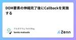
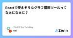

アルダグラム Tech Blogのフィード
https://zenn.dev/p/aldagram_tech
株式会社アルダグラムのTech Blogです。 世界中のノンデスクワーク業界における現場の生産性アップを実現する現場DXサービス「KANNA」を開発しています。 採用情報はこちら https://herp.careers/v1/aldagram0508/
フィード

DOM要素の伸縮完了後にCallbackを実施する 2
2
アルダグラム Tech Blogのフィード
アルダグラムでエンジニアをしている松田です。UI操作により、動的に変化する要素があるとします。要素の伸縮動作の完了を見届けた後に、何らかの処理を行いたい…そのようなユースケースで、本稿の内容が参考になれば幸いです。 要素を参照する方法 🎯まず、要素を参照する方法を考えてみます。 useRef + useEffect ? 🤔素朴に実装しようとすると、以下のようになるかもしれません。useRefを用いて、ref objectを用意するref objectを対象要素のref属性に指定するuseEffectでマウント時に、ref objectを参照するimport...
7日前

Reactで使えそうなグラフ描画ツールってなぁになぁに？ 1
アルダグラム Tech Blogのフィード
こんにちは！アルダグラムでエンジニアをしている大木です。昨今若者の間では「なぁぜなぁぜ？」というのが流行っているみたいですね。積極的に使っていこうと思います。さて今回は、Reactで使えそうなグラフ描画のライブラリはどぉれどぉれ？なのか調査調査？していこうかと思います。グラフ描画と聞いて筆者がすぐに思いつくのは、やはり「Chart.js」でしょうか。そちらも踏まえて、どういったライブラリがあるのかか調査していこうかと思います。 ~はじめに~ 執筆の背景実際にプロダクトで利用するつもりはなく「どんなものがあるのかな」と気になったので調査してみた、というのが執筆背景です。エンター...
13日前

Kotlin + DGS で始めるスキーマファーストな GraphQL サーバー開発
アルダグラム Tech Blogのフィード
こんにちは！アルダグラムでエンジニア兼PdMをしている @sukechannnn です！昨年から実装を開始した「KANNAレポート」では、バックエンドのGraphQLサーバーを Kotlin + SpringBoot + DGS で開発しています。Kotlin × SpringBoot で使える GraphQL フレームワークはけっこう選択肢があり色々迷った末に DGS を選んだのですが、スキーマファーストな開発体験がとても良いです。この記事では DGS (Netflix DGS Framework) の特徴と、便利な機能をご紹介します！ Netflix DGS Framewo...
19日前
Realm SwiftをSwift ConcurrencyとActorを使って安全に使いたい
アルダグラム Tech Blogのフィード
こんにちは！アルダグラムでエンジニアをしている長尾です久々のtry! Swift Tokyoが2024/03/22から開催されますが、そういえば初期のtry! SwiftはRealmが後援していたような、、と思い出しました。Realmは現在MongoDBに吸収されていて、時代の流れを感じます。。(※そして名前もAtlas Device SDKとかに変わるらしい。。)とはいえ2024年現在でもRealm Swiftは利用が可能であり、弊社のiOSアプリでも使用しています。また、Swiftは、そろそろ6.0がリリースされる足音が聞こえてきており、Strict Concurrency...
1ヶ月前
認証/認可処理の実現方法の検討と運用してみての感触
アルダグラム Tech Blogのフィード
こんにちは！アルダグラムでエンジニアをしているヤスです。 始めにKANNA では世界中のノンデスクワーカーに使われる SaaS を意識してプロダクト開発を行っております。https://lp.kanna4u.com/しかし、toB 向けのサービスであることから、以下のようなご要望も一定数存在します。ビジネス要件上どうしても個社ごとに最適化を行いたい他 SaaS や自社システムと KANNA を連携したいそのような場合、契約した会社自ら、プロダクトの拡張を行っていただくために、KANNA のリソースにアクセスできる 外部連携用のAPI を開発いたしました！https:...
1ヶ月前
JetBrains IDE で react-i18next の補完をできるようにする
アルダグラム Tech Blogのフィード
こんにちは！KANNA の開発のお手伝いをしております、フリーランスエンジニアの len_prog です。私は普段の Web フロントエンド開発に、JetBrains 社が提供する WebStorm を使用しています。JetBrains の IDE はデフォルトの状態でも非常に優秀で、補完も大体の場合にはちゃんと効くのですが、多言語化対応の開発をしている際に react-i18n-next の補完が効かずに困ったことがありました。通常、プロダクトの多言語化対応では非常に多くの翻訳を追加する必要があり、補完が効かない状態で開発するのはかなりしんどいです。例えば、このキーの翻訳が無...
1ヶ月前
【Android】mozjpeg を使って JPEG 画像を軽量化する
アルダグラム Tech Blogのフィード
こんにちは！アルダグラムでエンジニアをしている渡邊です！以前画像を軽量化するための調査を行った際に、mozjpeg というライブラリがあることを知りました。 今回はこの mozjpeg を使って Android アプリで JPEG 画像を軽量化させてみたいと思います。 ちなみにこのライブラリは C 言語で書かれているため、C 言語のコードを動かせる環境であれば Android アプリ以外でも使うことは可能です。 mozjpeg とはmozjpeg は Improved JPEG encoder. と GitHub では記載されています。 このライブラリを使うことで通常よりさらに軽...
2ヶ月前
会社のテックブログ運営の話
アルダグラム Tech Blogのフィード
こんにちは。アルダグラムでエンジニアしている前山です。弊社では、2022年の2月から、Zenn の Publication 機能を利用して、テックブログを運用しています。https://zenn.dev/p/aldagram_techそして、昨年の5月から、社内でテックブログチームを発足し、運営してきました。本記事では、弊社のテックブログの目的や直近ブログチームでやってきたことを紹介できればと思います。 テックブログの目的弊社のテックブログの運営において、目的としては会社から見てと個人から見ての2つの観点があります。 会社としての目的 1. 知名度と外部認知の向上...
2ヶ月前
N+1 ハントの話
アルダグラム Tech Blogのフィード
こんにちは！アルダグラムでエンジニアをしている森下霞です。Rails の ActiveRecord を使って素早くDBとのやり取りが書けるのですが、そこに罠があります。N+1 深い罠です。開発時に気づきづらい問題である N+1 の自動探知について話しようと思います。 どうして気づきづらい開発時にタスク通りの動作やコードの読みやすさに焦点を当てることがおそらく多いが、その中で N+1 を見逃してしまうことがしばしばあると思います。ログは N+1 問題の手がかりを提供しますが、開発者はログを常に注意深く確認しているわけではありません。特に大規模なシステムでは、ログの量が膨大であり、...
2ヶ月前
[Firestore] CLIでcollection groupのルール・インデックス設定ができるまでに必要なこと
アルダグラム Tech Blogのフィード
こんにちは！アルダグラムでエンジニアをしているkageyamaですFirestore の collection group を利用して、複数の collection に跨った batch 処理を対応する機会がありました。今回、collection group を扱えるところから、firestore.indexes.jsonの設定方法などハマった箇所があったので、その知見をまとめていきます。 collection group とはcollection group は、同じ ID を持つすべてのコレクションで構成されています。デフォルトで、クエリは、データベース内の単一コレクシ...
2ヶ月前
AWSのコスト最適化を行い30%程削減した話
アルダグラム Tech Blogのフィード
はじめにこんにちは、アルダグラムのSREエンジニアの okenak です。今回はスタートアップ企業のAWSコスト最適化に取り組んだ内容を紹介したいと思います。 背景弊社はグロース期のスタートアップ企業ですがAWSのコストが約1年間で4倍に上昇しました。これまでは社内の生産性向上や安定したサービスを提供するために、インフラリソースを潤沢に利用してきましたが、急激な円安等の流れもあり今ここにきて見直しが必要なタイミングとなったためコスト最適化に取り組むことにしました。（上記は補足として開発用と本番用のAWSアカウントの合算の金額です） コスト最適化のための取り組みコ...
3ヶ月前
アルダグラムが使っている技術スタック（2021年 → 2023年）
アルダグラム Tech Blogのフィード
こんにちは！アルダグラムでテックリードをしている @sukechannnn です！この記事は 株式会社アルダグラム Advent Calendar 2023 24日目です。昨日は森下さんの PostgreSQLの愛好家がMySQL 5.7の大規模なテーブルにカラムを追加しようとした話 でした！森下さんのデータベースの知識にはいつも助けられています…！この記事では、以前に公開した アルダグラムの技術スタックについて から、この２年くらいでの進歩を振り返ってみたいと思います。ではいってみましょう！ 技術スタック2021年末の時点と、現在（2023年末）とを比較してみましょう。...
3ヶ月前
PostgreSQLの愛好家がMySQL 5.7の大規模なテーブルにカラムを追加しようとした話
アルダグラム Tech Blogのフィード
こんにちは！アルダグラムでエンジニアをしている森下霞です。本記事は株式会社アルダグラム Advent Calendar 2023 23日目の記事です。私は10年間のソフトウェア開発経験を持っており、そのうち6年間はPostgreSQLを使用していました。前々職では、PostgreSQL が強く推奨され、開発者はみんなそれの設定と工夫を学びました。その経験を持つ私は、アルダグラムで「非常に大きなテーブルに新しいカラムを追加したいが、注意点はあるか」という課題が出たとき、すぐに PostgreSQL で得た知識を共有し、それによりマイグレーションがサービスに影響を与えずに迅速に実行で...
3ヶ月前
Cloud Functions の単体テストを考える
アルダグラム Tech Blogのフィード
こんにちは！アルダグラムでエンジニアをしている内倉です。本記事は株式会社アルダグラム Advent Calendar 2023 22日目の記事です🥳これまで、時折 Cloud Functions のコードを書くことはあったのですが、テストについてあまりきちんと知らなかったので、今回は 公式ドキュメント を読みながら、プロジェクトに合った単体テストについて考えてみたいと思います。 テストのセットアップfirebase-functions-test という公式のユニットテストライブラリがあるそうです。これを使えば firebase-functions で必要とされる環境変数の設定...
3ヶ月前
S3イベントで動くLambda関数をローカル完結で手軽に開発する
アルダグラム Tech Blogのフィード
こんにちは！KANNA の開発のお手伝いをしております、フリーランスエンジニアの len_prog です。本記事は株式会社アルダグラム Advent Calendar 2023 21日目の記事です。今年の11月にリリースした新規プロダクト「KANNAレポート」のバックエンドでは、帳票に画像をアップロードできる機能があります。この機能の開発に関わって、AWS SAM のS3イベントトリガー関数をローカル完結で開発する方法を発見したので、今回はその方法についてハンズオン形式でご紹介します。 前提minio がインストール済みで、http://localhost:9000 ...
3ヶ月前
Promiseを利用してNativeアプリとWebViewをスムーズな通信を実現する
アルダグラム Tech Blogのフィード
こんにちは！アルダグラムでエンジニアをしているBingyiです。本記事は株式会社アルダグラム Advent Calendar 2023 19日目の記事です。モバイルアプリ開発において、アプリをリリースせずに仕様を更新する必要がある場合、Webコンテンツを用意し、アプリ内のWebViewで表示する方法が一般的です。そのような状況では、WebViewからアプリ側への情報取得というユースケースが生じます。この場合、アプリとWebViewの間でスムーズな通信を確立することが重要です。この記事では、そのための具体的な仕組みについて説明したいと思います。今回はiOSアプリに焦点を当て、その仕組...
3ヶ月前
react-i18nextを使って、React環境に1から多言語翻訳の仕組みを構築してみる
アルダグラム Tech Blogのフィード
こんにちは！アルダグラムでエンジニアをしている柴田です。本記事は株式会社アルダグラム Advent Calendar 2023 18日目の記事です。 はじめに直近2週間ほど前に、英語とタイ語用のランディングページ(LP)を作成する機会がありました。その際に英語・タイ語への翻訳の仕組みを１から構築しました。今回は自身の備忘録も兼ねて、react-i18next を使って、多言語翻訳の仕組みを１から構築する手順をご紹介したいと思います。 react-i18nextreact-i18nextは、Reactアプリケーションの多言語対応を柔軟かつ簡単に実現するためのライブラリです。...
3ヶ月前
アルダグラムのSREになってから1年が経ったのでやってきたことを振り返ってみる
アルダグラム Tech Blogのフィード
こんにちは、アルダグラムのSREエンジニアの okenak です本記事は株式会社アルダグラム Advent Calendar 2023 17日目の記事です。今年ももう年の瀬ということであっという間でしたが、アルダグラムのSREチームに配属されてから1年が経ったので、これまでに自分がやってきたことを振り返ってみたいと思います。（量が多いため細かい改善などを除いた大きめのタスクだけ抜粋しています） やってきたこと 2022/12月 Datadogでモニタリング環境の整備社内のモニタリング環境としてDatadogが導入されていましたが、専門チームがいなかったため監視や運用周...
3ヶ月前
Testcontainers と sqldef を用いて Spring Boot のテストでリアルDBを使えるようにする
アルダグラム Tech Blogのフィード
アルダグラムでエンジニアをしている @sukechannnn です！最近 自作OSに入門するべく検証機として FFF-PCM2B を買ったのですが、これを触ることが目的と化してします（ちっちゃくてかわいい）。この記事は 株式会社アルダグラム Advent Calendar 2023 9日目です。今年の11月にリリースした新規プロダクト「KANNAレポート」のバックエンドは Kotlin + Spring Boot で開発しています。既存のサービスである「KANNAプロジェクト」とは別でサーバーを立てており、マイクロサービス構成になっています。今回新規でサーバーを立てるに当たって...
3ヶ月前
開発エンジニアも参加するスモークテスト導入してみた
アルダグラム Tech Blogのフィード
こんにちは！アルダグラムでQAエンジニアをしているshige_sです。本記事は株式会社アルダグラム Advent Calendar 2023 15日目の記事です。アルダグラムではQAプロセスの改善をQAグループが中心となって行なっています。今回は現在、QAプロセスの改善施策の内の1つ「開発エンジニアも参加するスモークテスト」についてのご紹介です。※スモークテスト（smoke testing）とは、開発途上のソフトウェアをテスト（試験）する手法の一つで、開発・修正したソフトウェアの基本的な機能が動作するかなどをざっと確認すること。 今夏まではJIRA内の開発チケット毎に開...
3ヶ月前